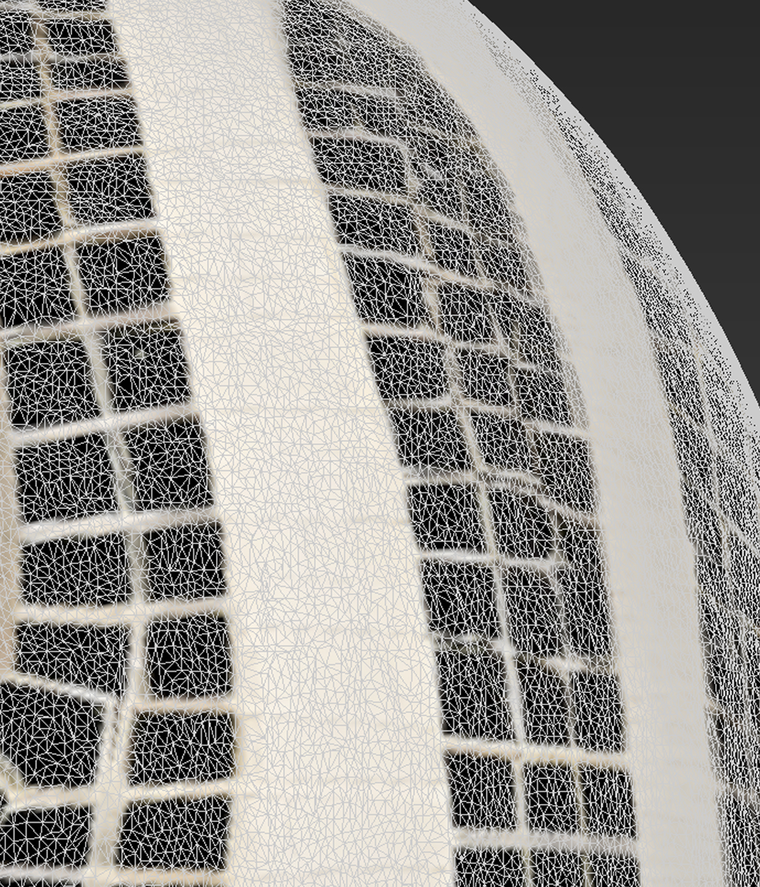
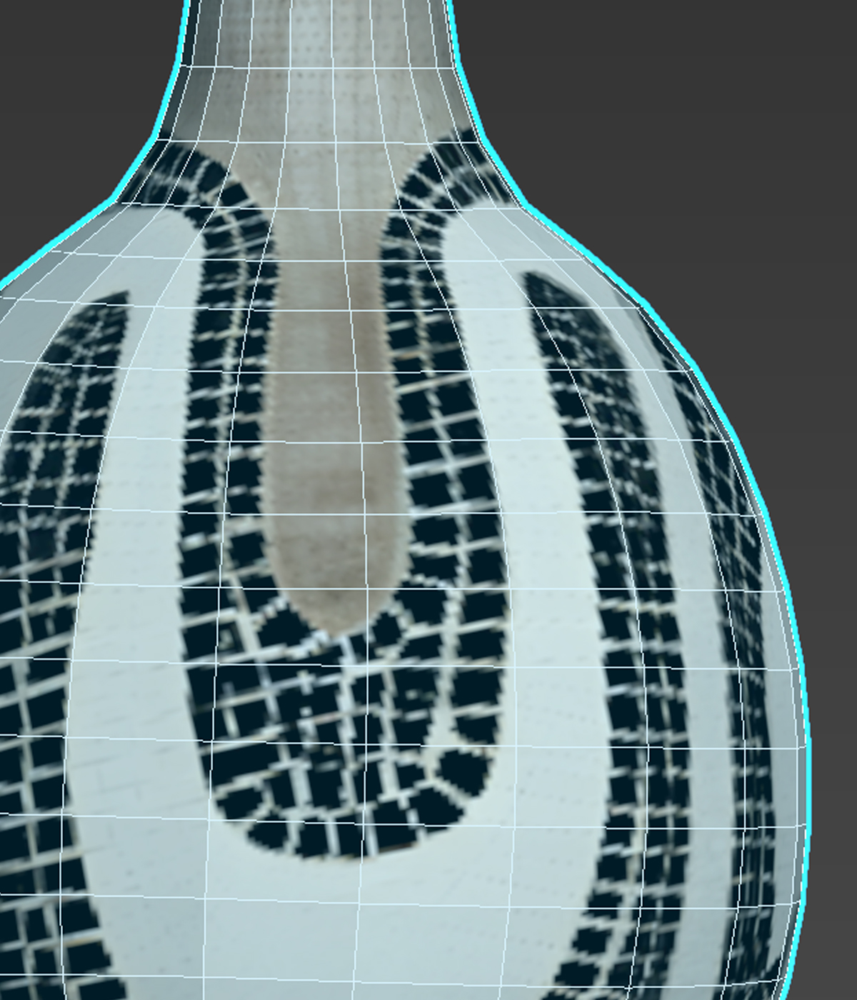
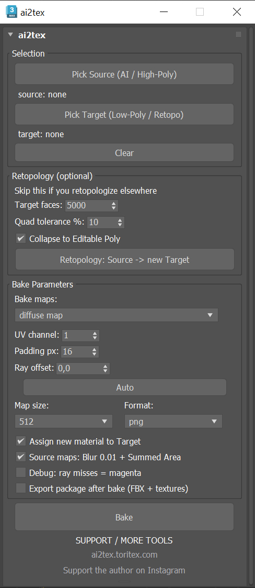

Built-in Retopology
Create a new retopologized Target directly from the Source using the 3ds Max Retopology modifier.
ai2tex can create a retopologized target using 3ds Max's built-in Retopology modifier, then bake Diffuse / Base Color and Normal maps onto its UVs.


AI-generated models from tools such as Hunyuan or Tripo can arrive with dense, irregular geometry and a difficult-to-work-with UV layout. After retopology and a new UV unwrap, the original texture no longer fits the new model.
ai2tex can use the built-in 3ds Max Retopology modifier to create a new Target from your Source. After you unwrap the Target, ai2tex automates Projection + Render To Texture and transfers the selected maps.
Already using Quad Remesher or another retopology solution? You can skip the built-in Retopology step and pick your own Target.

ai2tex keeps the workflow focused while automating the repetitive parts of retopology and texture baking in 3ds Max.
Create a new retopologized Target directly from the Source using the 3ds Max Retopology modifier.
Transfer Diffuse / Base Color and bake Normal detail from the Source geometry onto the Target.
ai2tex calculates a starting value from the object size. Fine-tune it when needed.
Projection, material and renderer changes used during baking are restored after the operation.
ai2tex can bake the Source's visible color and geometric normal detail onto the Target's existing UV layout.
ai2tex does not transfer the complete material stack. The Target's UVs are used for baking; the Retopology step creates geometry but does not unwrap it.
Choose Diffuse, Normal, or both. Normal maps are saved as PNG, with an optional green-channel flip for DirectX / Unreal workflows.
Choose a square output texture size from 512, 1024, 2048, 4096 or 8192.
Baked textures use the _TexBake naming pattern and are saved without silently overwriting existing files.
Export the Target as FBX together with its baked textures into a dedicated package folder after the bake.
No account and no email are required to download the free tool.
Download ai2tex ↓Leave your email only if you want a notification when a new tool or major product is released. No regular newsletter.
If it saves you time, you can support the development of free tools by following on Instagram.
Retopology, baking workflow, parameters, supported materials, output rules, troubleshooting and known limitations.